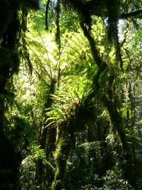

From Budapest to Arusha
Flight from Budapest to Cairo with Egypt Air.
Changed planes after some non serious passport and security control. They were still checking the body temperature of the arriving people with cameras. We had no fever, so we were admitted to the country. Arrived to Nairobi early in the morning at 3.45. got the visa at the airport without problems. Nobody wanted to see any documents, travel itinerary or alike, banks statements or onward ticket, which the embassies in Europe made so much hassle about. We only had to file the application form and pay 25 USD and that was it.
At the exit of the airport some stalkers were waiting for the tourist to offer them shuttle rides, taxi service and safaris. As we had our shuttle booked through the internet (Riverside shuttle), all we had to do was to wait in a bar there at the airport 5 hours for our bus to arrive. There were quite a lot of other people doing the same. A representative of the riverside company showed up within a few hours and confirmed our booking. She also sold us the tickets for the ride back to Nairobi. Interestingly she went pretty much below the price we paid online, offering a house to house service for 25 USD/ person instead of 35 USD. So when finally the shuttle arrived it was only half an hour late and surprisingly all the people waiting fit into it. The bags were secured on the roof of the bus and we were ready to go. Soon enough we found out about the terrible status of the roads in Kenya and Tanzania.
Even though the distance between Nairobi and Arusha was only some 250 kms, it took us 7 hours to cover. It felt that the driver could only honk and press the accelerator pedal, but not really drive. It felt that he was speeding with 100 km/h on the creepy dust roads, taking over everybody and scaring the pedestrians and bikers on the road by honking at them. The landscape was quite different than what I have imagined of Africa. Along the road there were many settlements stretched out and almost every shabby building along the road was a store or a bar. They were selling everything: hardware, computers, cell phones, vet products, clothes, we even saw medical laboratory services being offered in some buildings. In those settlements many people were standing and hanging out along the road, seemingly doing nothing. Some kids were playing: chasing bike tires with a stick or playing with a jumping rope. The wore dirty clothes, which after having spent a week in Africa did not surprise me any more, because even we got pretty dirty within a day without playing in the dirt. Most of the kids however seemed to be on the way to or from school, walking in groups in their school uniforms.
The fact that we were arriving to a settlement was made noticeable by speed bumps, so that the cars would slow down. Nevertheless it had only a transient effect on the speed of our bus, because after the bumps the speed rose again and some more aggressive honking started. Between the settlements the landscape was pretty much the same until Arusha: very dry red soil scattered Acacia trees of different species some with bright yellow bark and bushes. It was surprising how dry and burned out everything was, considering that the rainy season should just have ended a few weeks before. As we were told later there has been a drought and not much precipitation occurred during the rainy season. So the area was in serious problem due to the lack of water. The Kenyan newspapers were painting a dark future for agricultural products and were already reporting about famine in certain areas of the country.
To my greatest disappointment we saw absolutely no wild animals along the road. This is definitely not what I have expected. On the other hand we saw many many cattle and goats, mingled with some sheep, herded mostly by kids along the road, looking for something eatable. No question it was a tough task as all the grass was burned out. No wonder the animals were so lean.
Finally we reached to Tanzanian border, de-registered from Kenya and applied for a Tanzanian visa. Again the visa application was only about paying 50 USD, nothing more. Everybody in the bus gave the passports, the money and the application forms to the driver who gave it to the immigration officers and in about half an hour all 20 people got their stamps. After a few hours of bumpy ride we finally arrived to Arusha. The traffic was quite crazy, there was no rule on the streets concerning the right of way, people were simply driving and honking. So the traffic jams were probably due to this kind of driving habit and not to the number of the cars. From the shuttle terminal we took a cab to the Arusha backpackers hostel, where we booked a double room in advance. It was located on the main road, about 10 minutes walk away from the centre of the town, which was marked by a clock tower (sponsored by coca cola). It turns out that the location of the clock tower marked the centre of the African continent as well, at least what the distance between Cairo and Cape Town was concerned. In town there was pretty much nothing to see. The most interesting thing was probably the Masai market, where the carvings, spears, jewels and paintings were sold. We looked around there, but did not buy anything. The salesmen were very friendly, invited us in to their sheds, showed us how they carve, paint, make bead ornaments etc. Even though we told them that we are not going to buy anything. It appeared that the carvings were mainly of hard wood like ebony, mahogany and rose wood. As these trees grow very slowly and only for these carvings yearly 60 000 trees are cut down, the environmentalist suggest not to buy these carvings, but to ask for ones which are made of fast growing trees like olive and mango. Nevertheless the value of the carvings seems to lie in the material and not in the carving itself.
On the streets the stalkers overwhelmed us. Their approach was quite polite, first they always greeted us and started talking to us, asking where we are from, how we are, where we are staying, have we been to Africa before etc. After a short conversation they started pulling out bracelets, necklaces, pictures made of banana leaves and other original Tanzanian souvenirs out of their pockets to sell us for a very cheap price. Other people started promoting safari offices for us. Interestingly when we mentioned that we have a Kili climb booked with Duma Explorer every single local said that it was a very nice company. Again this surprised me, because in the guide books all you can read that stalkers would tell you that the company you booked your safari with does not even exist any more or that they offer bad service and offer you a much better and cheaper company. At the beginning we tried to be polite and act interested, but as we found out it was a bad strategy because it only made it more difficult to get rid of those people. We also found it out that we must not buy anything from street vendors because they are pretty shameless and sell e.g. free city maps for 12 USD. We were very pleased for a while by buying a city map and a Swahili phrase book for 5 USD instead of 24. Then we found out that the map is for free and the phrase book is about 1.25 USD. This was the point when we stopped buying things on the street and asking the price. Basically the idea is that people on the street want to rip you off as much as possible and you must bargain without shame. Only then can you get things for a reasonable price. Beside the street vendors there are many people hanging out on the street offering guiding and taxi services. They want to show you around in town, although there is not much to see or take you to the “once in a year Masai market” which actually takes place almost daily. Due to these disturbances walking in the city is quite cumbersome and slow. We felt intimidated by the questions of the locals, so we made up a story that we are from Finland and our names are Mati and Tina. Then it turned out that half of Arusha's population has relatives living in Finland.... I did not even take pictures, because we were most of the time surrounded by people. We were also told that taking photos in Africa in general is not so easy because some people take it as an offense or they demand money for their pictures, particularly people who dress up in the traditional clothes for tourists. According to some organizations the latter behavior should not be supported – although this made me think. In Europe we have so many “street artist” who dress up like statutes and just stand still and want money for their performance. And we give money to those. On the other hand in Africa why is it wrong to give money to poor people who put on their traditional costumes for tourists. What is the difference? I bet in Europe those people could make money by proper work, while in Africa the tribal people cannot do too much to support their families, especially when weather conditions are extreme and droughts occur. At least what they are doing even has some cultural value, so I do not really see why it is frowned upon…. for the tribal people it must be more difficult to find jobs, as their level of education is not so high. In Arusha for example the proud Masai warriors act as security guards for banks and exchange offices and for other shops. In front of most buildings armed guards are hanging out. In the Kilimanjaro area the climbing companies used to employ only Chagga people as guides and porters (they are the aborigines of the Kili area). Making a living otherwise must be difficult, although it seemed that people are trying hard. As most of the people are farmers they are trying to sell their products and they do that everywhere. In the towns on the markets on the streets, really everywhere. Every 10 meters there is somebody standing on the street selling something: charcoaled corn on the cob, oranges, mangos, peanuts, onions etc… Other people stocked up mobile phones, DVDs (pirate copies of course), watches, phone chargers. So actually all the settlements act as one huge marketplace. I was simply wondering who is buying all these things? Everybody is selling the same stuff…
Concerning food we thought we would not buy anything from the street, although “fast food” is sold everywhere, meaning samosas, chapaties and other fried snacks which are very cheap. The restaurants on the other hand are relatively expensive, one meal costing 5-8000 Tanzanian shillings (4-7 USD). We decided on eating in the hostel, since the price was more or less the same as in other restaurants in town and the food was really good. Kaarel loved their burgers and I really liked their vegetable stew. Vegetarian dishes can be found everywhere because there are so many vegetables available and because meat is quite expensive. The local food is quite spicy, sometimes containing unusual things like cloves. Even the local Swahili tea tastes very spicy and somehow it is savory and fatty.
Kilimanjaro climb: 7 days Machame route
Predeparture briefing took place the day before our climb in Arusha backpackers. Our guide Msuri Moshi talked to us in the bar and checked shortly our equipment. He gave us a general introduction about the expected conditions, required equipment etc.
15.07.2009.
Pick up at the hotel by Duma explorer at 9.00 am. In the van: driver, Msuri, the guide, our cook Godwin and a porter named Rajabu. Ca 2h drive to the Machame gate. Road was quite ok, asphalt, not like the one from Nairobi. Landscape is manmade. Many buildings along the road, passing through smaller villages, all of which seem to have a market all the way along the road.
In front of the gate to the Kilimanjaro National Park many local people were waiting, they were either porters who wanted to be hired for a climb or were selling gaiters, t-shirts etc to the tourists. We had to register at the headquarters and we were ready for the climb.
We waited until the bags of the porters were weighed and until they organized the equipment. Before starting the climb we met the crew: Msuri the head guide, Godwin the cook, Oscar the waiter + porter, Emanuel the summit porter, Anderson the tent responsible porter, Tadei , who was in charge for the toilet and the other porters: Dickson, Godson, Jackson and Rajabu. So in total we had 11 crew members for 2 climbers.
On the Machame route there are no huts or other facilities for the climbers or staff, so every group had to carry their own tents, sleeping bags, kitchen equipment, dishes etc. We were quite spoiled with a dining tent, camping chairs and an own toilet tent. Our own bags were carried by the porters too, we only needed to carry a small daypack with us, which contained raingear, 2-3 l water/ person and lunch (+ personal things e.g. camera, gps, cell phones). Of course at the end it turned out that we took too many things with us. When we were packing we took for example one t-shirt for every day. It was really too much, because we got dirty and sweaty almost immediately during the climb anyhow, so it was not a problem to wear the same t-shirt every day. Particularly because there was no showering possibility. We just had to change to dry shirts after we were done with the climb for the day and washed our hands and feet. For cleaning the other body parts, taking wet baby wipes was the best idea.
The climb started in a lush rainforest-like mountain forest, with mossy trees, many ferns and thick undergrowth.
|
 |
|
At this level there were only a few flowers, the most prominent being the indigenous Impatia kilimanjari.
As we were reaching higher altitudes the trees were replaced by heather bushes which at the beginning were about 2-3 m tall and got gradually shorter as we hiked higher. During the hike the only animals we saw were 3 black and white colobus monkeys.
At the camp we also saw black naped ravens.
The hike was continuous uphills, but was not technically challenging or particularly tiering. We got to our first camp, the Machame camp in 6 hours. It was located in the forest. From the camp our destination the Kibo was finally visible.
At the altitude of the Machame camp more flowers were growing: mostly everlastings which are represented by 4 species. The characteristic of these plants are their colorful and dry flowers.
|
|
|
|
26.07.2009. Saturday
Drove til 2 pm to Samburu national reserve. Stopped for shopping at nanyuka, a small village at the foot of Mt Kenya. Climbing tours are organized mainly from here. Campsite is at the border of the national reserve on the bank of a river. Had quick lunch at the campsite, put up the tents. Very windy, and dust got swirled up. Visit to the Samburu village run by women who run away from their man with their children, because of family violence and because man in their community did not support girls attending school, which they find very important. They are also against female circumcision which is still practiced in their tribe. They founded the village 20 years ago and are maintaining it by raising livestock, giving tours to tourists, selling self made jewellery and they also get financial support from outside. Their museum was supported by the dutch. The museum displays a few every day items, spears, jewels, girl skirt, apron, fat and milk containers, castrating tool, bow and arrow which they use to take blood from their cows. Their main food is milk and blood. They do not grow crops. The women also danced and sang for us and with us. During the songs they were making movements so their many bead necklaces would bounce up and down in their necks. We were told that unmarried women wear beads of one color only and after marriage they wear colorful ones. They also run a school for their kids and for the kids of the surrounding settlements. There are 2 classes, one for babies up to 3-4 years and the other one for older kids until they go to primary school. At school they learn 3 languages: their tribal Samburu, English and Swahili. We visited the school too. The kids were very cute, they were singing in English and were very friendly. Most of them had only dirty clothes and some of them were naked in the bottom. One kid had a teletubies doll, the other one was playing with a stick with a plastic wheel attached to its end. We took many photos of them and showing the pictures to them made them really happy.
At the time of our visit the herd was not at home, only the baby animals were left in the village. They were all really thin. I guess they get only milk from their mothers after they came back from grazing.
At the end of our visit the women presented us their goods for sale. They make jewelery out of beads: bracelets, necklaces. They also had some carvings for sale , made by their sons and spears too. We bought 2 necklaces for 750 Ksh = 10 USD.
I had cooking duty and our team made chicken curry with rice, with the guidance of Moses, our tour leader.
At night it was quite warm, so we left the doors of the tent open and used only the thin sleeping bag. The showers had only cold water and no lights, no hangers for the clothes.
27.07.2009. Sunday
Got up at 5.15. departure at 6 am , before sunrise to the Samburu Conservation area. Full day Safari in the park with the big truck. Paid by the kitty. Park very dry, riverbeds dried out, vegetation dry and brown, hardly any green bushes. Saw the following animals:
Gerenuk
Cheetah
Elephants
Reticulate giraffe
Waterbuck
Dik diks
Oryx
Gravey’s zebra
Ostrich
Mongoose
Grant gazelle
Thomson gazelle
Impala
Greater kudu
Baboons
Bat eared fox
Hornbills
Fish eagle
Vulture
Guinea fowl
Scrub hare
Dumm palm
Breakfast stop in the park at the riverbed : cereals and fruits
Lunch stop at the same spot . Baboons very cheeky, stole some of our food.
Afternoon 1.5h stop ate a lounge: looked very fancy, had swimming pool, but they wanted to charge 850 KSh for swimming, so we did not swim, just sat at the pool and had water. Around the park Samburu people live in small settlements, their houses are round and have no window. The roof is traditionally made of cow dung, but nowadays they also use plastic bags and cardboards. They keep the cows and goats in the middle of the village surrounded by fence. They take them out grazing during the day. Kids around the villages are cute, come to the tourist buses and wave.
Kaarel has cooking duty, the menu is mashed potato.